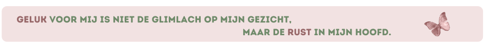
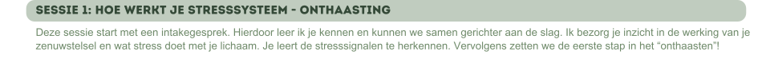
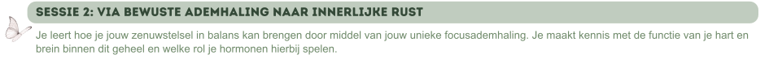
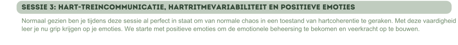
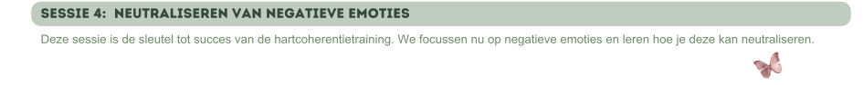
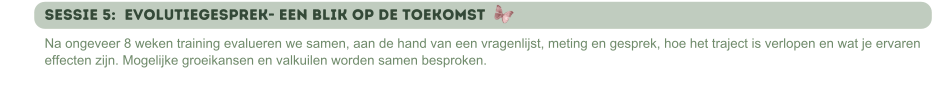

Stressbeheersing is essentieel voor een gezonde balans in het dagelijks leven. Methoden zoals hartcoherentie en manuele lichaamstherapie kunnen hierbij effectief ondersteunen. Hartcoherentietraining helpt om stress te verminderen en zorgt voor meer innerlijke rust. Manuele therapie richt zich op het verminderen van fysieke spanning in het lichaam, wat bijdraagt aan zowel ontspanning als een verbeterde stressbestendigheid. Samen vormen deze technieken een krachtige combinatie om stress beheersbaar te maken en zowel lichaam als geest in balans te brengen.

Hartcoherentie verwijst naar de harmonie tussen je hartslag en andere systemen in je lichaam, zoals je ademhaling. Deze samenhang beïnvloedt je lichamelijk, cognitief, emotioneel en sociaal functioneren. Allerlei klachten, zoals stress, kunnen je hartcoherentie verstoren.
Bij hartcoherentie is je ademhaling je beste bondgenoot. Door te ademen in een specifiek ritme, leer je stress te beheersen en je veerkracht te versterken.
Door regelmatig hartcoherentie te trainen, kan je je lichaam in een staat van rust brengen.
Deze wetenschappelijk bewezen techniek wordt toegepast bij chronisch hyperventileren, angsten, overprikkeling, burn-out...
Werking
Wanneer je inademt, versnelt je hartslag, en bij het uitademen vertraagt deze weer. Deze natuurlijke reactie vormt de basis van hartcoherentietraining. Door in een specifiek ritme in en uit te ademen, ontstaat er een consistent patroon in de variatie van je hartslag. Dit regelmatige en synchrone ritme in hartslagvariatie staat bekend als hartcoherentie. Je hartslag en je ademhaling zijn op elkaar afgestemd. De coherente samenwerking tussen deze systemen zorgen voor een positieve kettingreactie in het lichaam: je brein komt tot rust, je bloeddruk daalt, balans tussen O2 en CO2, productie acetylcholine... Dit zorgt voor een ontspanning van het lichaam.
Effect
• Verminderen van stressgevoel
• Verhogen van je veerkracht
• Bevordering van een aangenaam en rustig gevoel
• Meer creativiteit en probleemoplossend vermogen, beter geheugen
• Verbetering van concentratie en focus
• Verandering van gedrag en denken in positieve zin
• Meer grip op angsten
• Verminderen van hoge bloeddruk gerelateerd aan stress
• Verbeterd hormonaal evenwicht
• Verbeterd geheugen
• Versterkte immuniteit
• Betere slaapkwaliteit
• Ondersteunend effect bij regulering van bloedsuiker waarden
• Verbeterde prestaties
• Regulering van lichaamsgewicht, vooral bij emo-eten
• Bloeddruk regulerend, daling van hoge bloeddruk (stress gerelateerd)
• Meer vitaliteit...
Meer informatie over hartcoherentie voor kinderen vanaf januari 2025.
Een korte oefentijd geeft je een kwalitatieve herstelfase met een 6 uur durend positief effect op lichaam en geest! We bouwen stelselmatig op. Deze training vraagt weinig van je dagdagelijkse tijd maar wel aandacht en discipline. Daarom is coaching zo belangrijk. Het traject bestaat uit 5 sessies. Ik neem tijd om je optimaal te kunnen begeleiden en om ervoor te zorgen dat alles duidelijk is voor jou. Daarom duurt de eerste sessie 90 minuten en de vervolgsessies 60 minuten.





De kostprijs voor het totale pakket is 250 euro.
Iedereen maakt emotionele ervaringen mee, sommige dragen we langer met ons mee dan we zouden willen. Dit kan leiden tot spanning in het lichaam, wat klachten zoals pijn, verkramping en ontstekingen veroorzaakt. Manuele lichaamstherapie helpt om deze spanning te verminderen door het zenuwstelsel te kalmeren en het lichaam weer in balans te brengen.
Dit gebeurt via zachte, gerichte handelingen en bewuste ademhaling, wat leidt tot minder fysieke en emotionele klachten, een beter zelfbewustzijn en meer welzijn. Dit is effectief bij diverse klachten zoals rugpijn, fibromyalgie, vermoeidheid en slaapstoornissen.
Duur: 60 minuten - Kostprijs: 50 euro